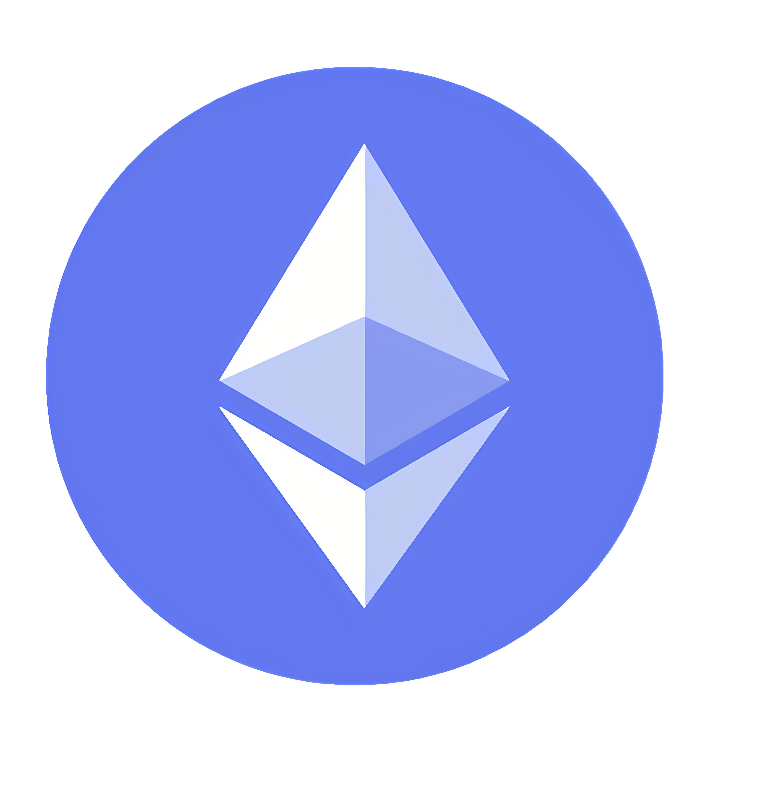
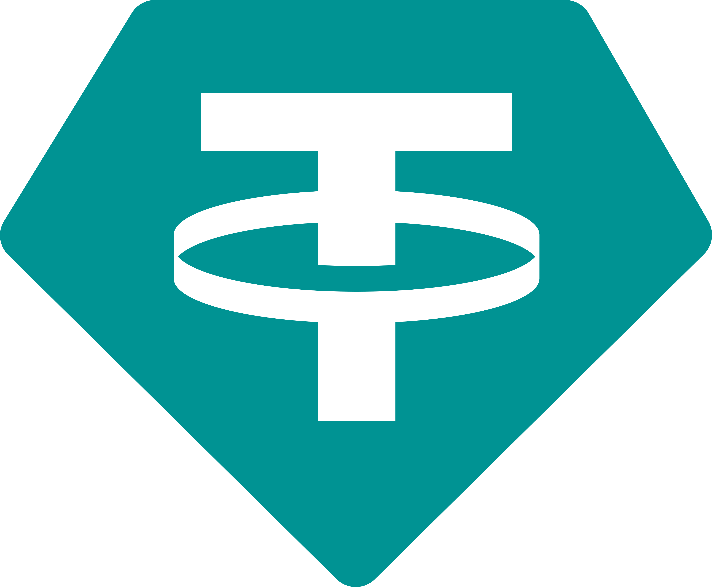

| Logo |
Attributes |
Details |
 |
Bitcoin |
It is the largest and most popular cryptocurrency by market cap and was created by Satoshi Nakamoto in 2009. It is a decentralized digital currency that has transferrable ownership. With its value in Philippine Pesos 5,106,523.03PHP |
|  |
Ethereum |
The closest second crypto currency next to Bitcoin is Ethereum, and its token which is called “Ether.” The Ethereum network is intended to replace traditional financial services firms like banks and brokerages by using decentralized applications, commonly called “DeFi,” for financial applications. Ether is the fuel that is required to run transactions on the Ethereum blockchain. With its value in Philippine Pesos 184,960.63PHP |
|  |
Tether |
The third largest coin at the time of writing is quite different from Ether and BTC because it is a centralized cryptocurrency. Tether is the largest stablecoin that attempts to tie its price to the US Dollar. Tether is commonly abbreviated USD₮ or USDT. This stablecoin is owned by iFinex, which owns the Bitfinex exchange. With its value in Philippine Pesos slowly declining in a value of 58.81PHP |